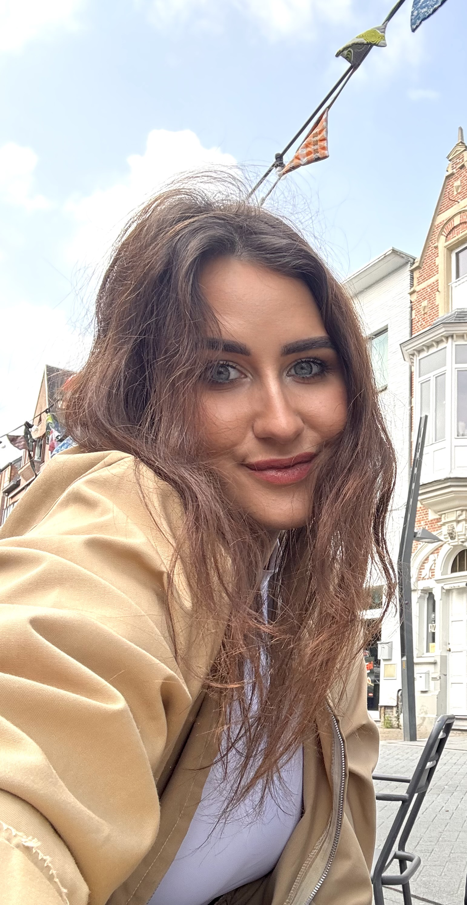

Onze eerste editie ging door op 7 juli 2026 in Café Chaos. Een avond vol wijn, kleur en design, met tien deelnemers die elk hun eigen canvas mee naar huis namen.
Geen ervaring nodig · stap voor stap begeleid · materiaal, wijn & hapjes inbegrepen
Een indruk van de eerste editie: schilderende deelnemers, wijn, en canvassen die stuk voor stuk anders werden.
Foto's laden…
Het is geen avond waarop je een voorbeeld natekent. Onder begeleiding van een interieurontwerpster ontdek je kleurtheorie en compositie, en maak je een canvas dat thuishoort in een modern interieur.
Begeleid door een opgeleide interieurontwerpster met oog voor kleur, textuur en ruimte.
Een moderne, stap-voor-stap aanpak op echt canvas, voor elk niveau.
Een werk waar je trots op bent en dat je écht ophangt, niet iets voor in de kast.
Een warme, gezellige avond met wijn, hapjes en goed gezelschap.

Beta is opgeleid interieurontwerpster (B.A.) en kunstenaar, gevestigd in Turnhout. Ze begeleidt je stap voor stap, zodat iedereen, ongeacht ervaring, met een mooi resultaat naar huis gaat.
De vragen die de meeste mensen hebben, vooraf beantwoord.
Zeker. Je hebt geen ervaring nodig: Beta begeleidt je stap voor stap, en iedereen gaat naar huis met een werk waar ze trots op zijn.
Niets. Alle materialen, canvas en schorten worden voorzien. Kom gewoon zoals je bent, alleen of met vrienden.
De begeleiding is in het Engels, en Nederlands of Frans zijn altijd welkom. Je volgt makkelijk mee.
Nog niet vastgelegd. Laat je e-mail achter bij "Blijf op de hoogte" hieronder, en je bent de eerste die het hoort zodra er een nieuwe datum en prijs zijn.
Dat wordt samen met de volgende datum bekendgemaakt. De eerste editie was een gratis pilot; latere edities kunnen een prijs per persoon hebben.
Laat je gegevens achter en je hoort als eerste wanneer de volgende editie een datum krijgt.